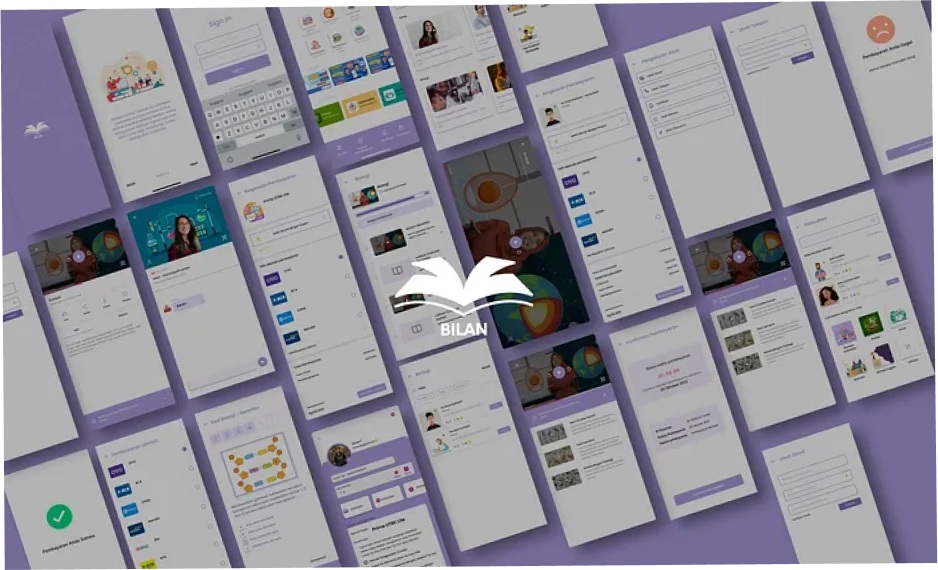
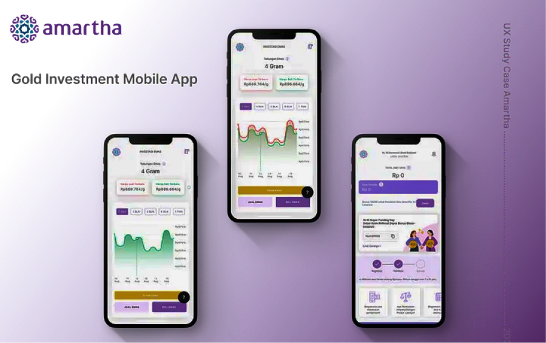

Saya adalah seorang mahasiswi jurusan Teknik Informatika di Universitas YARSI yang memiliki minat yang kuat dalam bidang Fullstack Web Development. Kemampuan saya yaitu mudah beradaptasi dan kemampuan kolaborasi yang baik dalam tim. Selain itu, saya memiliki kecenderungan untuk bekerja dengan kreativitas dan ketelitian yang tinggi.
Kampus Merdeka Studi Independen
Saya bersama tim saya membuat UI/UX Design sebuah aplikasi edutech dan mengerjakan challenge, membuat UI/UX Design Fitur Investasi Emas, yang berkolaborasi dengan Amartha.
Bilan merupakan sebuah edutech yang dibuat untuk membantu pelajar SMP dan SMA meningkatkan kemampuannya di dunia pendidikan.
Fitur ini dibuat untuk memenuhi challenge yang diberikan oleh Skilvul bersama Amartha sebagai challenge partner
Project ini dibuat oleh grup kami sebagai challenge untuk memenuhi tugas yang diberikan oleh Skilvul dalam Program Magang dan Studi Independent Bersertifikat (MSIB).
Project ini dibuat untuk memenuhi challenge yang diberikan oleh Skilvul bersama Amartha sebagai challenge partner dalam Program Magang dan Studi Independent Bersertifikat (MSIB).